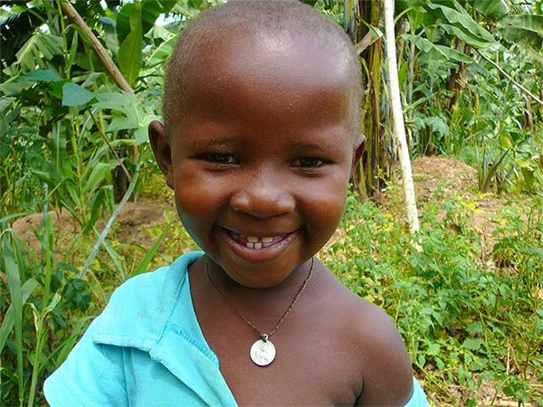

Word Vriend van Rubya.
Wij bestaan geheel uit vrijwilligers. Uw gift komt dus voor 100% ten goede aan de projecten in Rubya.
Kies een bedrag en zie wat het betekent.
Elke euro gaat naar Rubya. Probeer het uit: hoeveel mensen helpt u?
Palliatieve zorg kost € 35 per patiënt, een jaar studie € 1.250 per student.
van een studiejaar
Een student een jaar laten studeren kost € 1.250.
Drie manieren om Vriend van Rubya te worden
Eenmalige schenking
Het eenvoudigst: maak het bedrag over op onderstaand rekeningnummer. Omdat wij ANBI zijn, kunt u de gift opvoeren als aftrekpost voor de inkomstenbelasting.
Periodieke schenking
Steun ons maandelijks. Wij adviseren een automatische overboeking via internetbankieren, zodat u het niet kunt vergeten.
Periodiek, per overeenkomst
Fiscaal het aantrekkelijkst: volledig aftrekbaar, zonder 1%-drempel. U kiest een vast bedrag en legt dat minimaal 5 jaar vast met het formulier van de Belastingdienst.
Maak uw gift over
Vermeld gerust uw naam en e-mailadres als omschrijving, dan houden wij u op de hoogte van de projecten.
NL66ABNA0624513211t.n.v. Stichting Vrienden van RubyaBIC ABNANL2A
Laat het ons weten
Bent u Vriend van Rubya geworden? Laat uw e-mailadres achter. Wij houden u jaarlijks op de hoogte met een digitale nieuwsbrief.